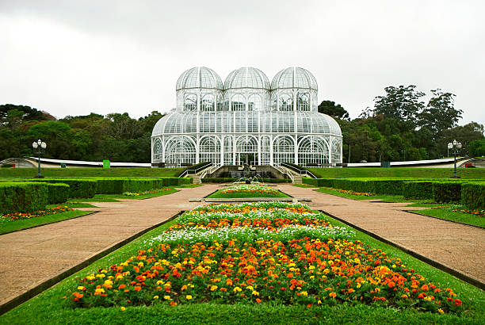

Turismo em Curitiba
Pontos turisticos para conhecer!
Os pontos turísticos de Curitiba contam a história de uma cidade que cresceu com imigrantes poloneses, italianos, alemães e ucranianos e que, a partir dos anos 1970, ficou conhecida pelo planejamento urbano. O Largo da Ordem, no centro histórico, guarda casarões do período colonial e recebe aos domingos uma das feiras de artesanato mais tradicionais do país. A pouca distância dali, a Rua XV de Novembro foi um dos primeiros calçadões de pedestres do Brasil e até hoje é um dos lugares mais movimentados da cidade. O símbolo mais famoso de Curitiba é o Jardim Botânico, com sua estufa de vidro e ferro inspirada nos palácios de cristal europeus. Ele divide a atenção com a Ópera de Arame, um teatro feito de tubos de aço no meio da mata, e com o Museu Oscar Niemeyer, que ganhou o apelido de "Museu do Olho" pelo formato marcante. Parques como o Barigui e o Tanguá mostram a ligação dos curitibanos com a natureza, e a Linha Turismo leva os visitantes aos principais pontos da cidade em um só trajeto, transformando o passeio em uma viagem pela identidade da capital paranaense.
Saiba Mais